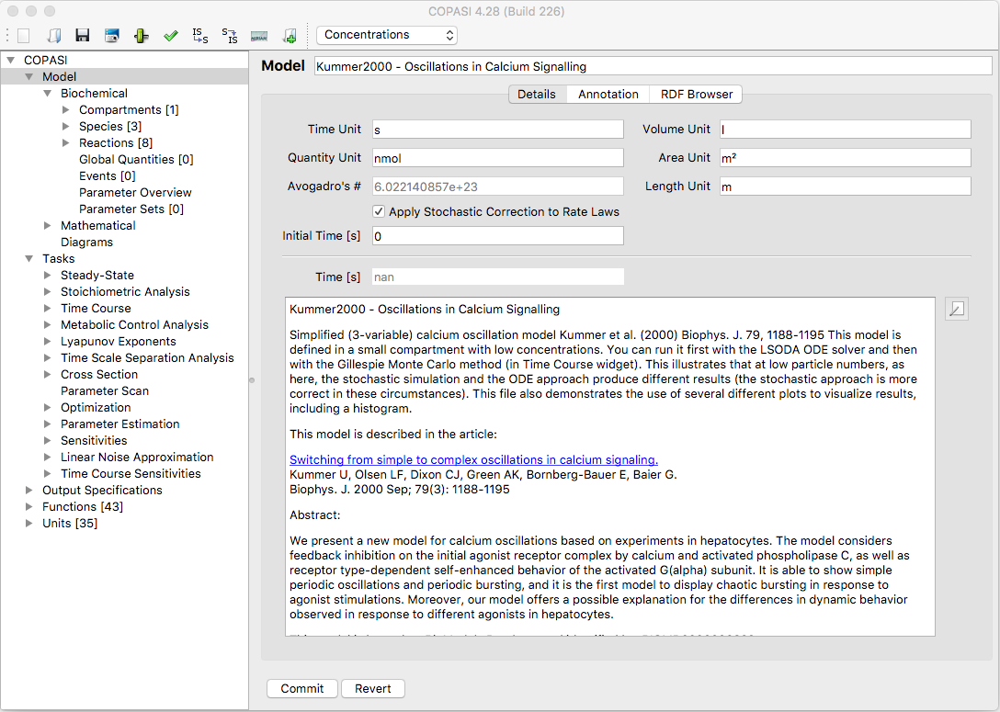

<div class="row">
  <div class="col-xs-12">

    If you click on the Model branch of the object tree which was explained in the <a
      title="COPASI: Support/User Manual/Model Creation/COPASI GUI Elements"
      href="{{ site.baseurl }}/Support/User_Manual/Model_Creation/COPASI_GUI_Elements/">COPASI GUI Elements</a> section,
    you activate the dialog that lets you specify certain parameters for your model like its name and the units that are
    to be used for time, volume and concentration quantities throughout the current model. You can also give a textual
    description of your model that is more expressive than reactions and equations. You could for example state which
    part of the metabolism the model describes (e.g. glycolysis) and add some references to articles related to the
    model. This will help others (and yourself) to understand and identify your models.<br />
    <br />
    <div class="img" align="center">
      <table cellpadding="0" cellspacing="0">
        <tr>
          <td></td>
        </tr>
        <tr>
          <td class="mini">Dialog&nbsp;for&nbsp;general&nbsp;Model&nbsp;Settings</td>
        </tr>
      </table>
    </div><br />
    <div class="alert alert-warning" role="alert">
      <span class="glyphicon glyphicon-exclamation-sign" aria-hidden="true"></span>
      <span class="sr-only">Warning:</span>
      You should be aware that changing the default units actually changes the
      model. For example, if you change the default volume units from liters to
      milliliters, all the particle numbers in your model change by a factor of
      1000.
    </div><br />
    COPASI internally represents amounts of species by particle numbers. If a
    concentration must be displayed or is needed for output, COPASI calculates
    it from the particle number, the volume of the compartment the species
    belongs to, and Avogadro's number
    $6.022140857 \cdot {10}^{23}\,\frac{\mbox{particles}}{\mbox{mol}}$. Suppose
    your default volume units are $fl$ and your default substance units are $nmol$,
    and species $A$ has an amount of $1.0 \cdot {10}^{15}\,\mbox{particles}$.
    If the compartment containing $A$ has a volume of $1.0~fl$, the concentration
    will be 
    $\frac{1.0 \cdot {10}^{15} \, \mbox{particles}}{6.022140857 \cdot
    {10}^{23}\,\frac{\mbox{particles}}{\mbox{mol}}\,\cdot 1.0\, \mbox{fl}}$.
    Since the default substance unit is nmol (not mol), multiply the result by
    $1.0 \cdot {10}^{9}$. COPASI would therefore display a concentration of
    $1.661\,\frac{\mbox{nmol}}{\mbox{fl}}$.<br />
    <br />
    You can easily change the display between concentrations and particle numbers
    by selecting the drop-down list in the menu bar at the top. By default,
    COPASI displays concentrations.<br />
     <div class="img" align="center">
      <table cellpadding="0" cellspacing="0">
        <tr>
          <td></td>
        </tr>
        <tr>
          <td class="mini">The drop-down list for selecting the display mode of concentrations and particle numbers.</td>
        </tr>
      </table>
    </div><br />
    <br />
    The drop-down list labeled "Rate Law Interpretation" lets you specify how
    COPASI should interpret the kinetic rate laws for your reactions. By default,
    COPASI interprets all rate laws as deterministic rate laws. Since COPASI
    allows simulation either deterministically or stochastically, it must make
    corrections to deterministic rate laws when using them for stochastic
    simulation. Sometimes, rate laws have already had these corrections applied
    by the modeler for stochastic simulation. If this is the case, you should
    select "stochastic" from the drop-down list. With this setting, COPASI will
    not apply further corrections to the rate laws in the model during stochastic
    simulations.<br />
    <br />
    In the field labeled Time (s) under the text Initial the user can tell COPASI to take the given value as the initial
    time for tasks like time course. This field is only enabled for editing for non-autonomous models, i.e., models
    which use the value of time explicitly in an ODE, an assignment, a rate law, or an event. COPASI automatically
    detects whether a model is non-autonomous. If you have a non-autonomous model you can set the start time of a time
    course by adjusting this field. For more information on running time course simulation is COPASI see <a
      title="COPASI: Support/User Manual/Tasks/Time Course Simulation"
      href="{{ site.baseurl }}/Support/User_Manual/Tasks/Time_Course_Simulation/">Time Course Simulation</a>.<br />
    <br />
    <div class="alert alert-warning" role="alert"><span class="glyphicon glyphicon-exclamation-sign"
        aria-hidden="true"></span><span class="sr-only">Warning:</span> The update model option on each task will only
      update the initial time for non-autonomous models otherwise it will be left at 0.</div><br />
    <br />
  </div>
</div>